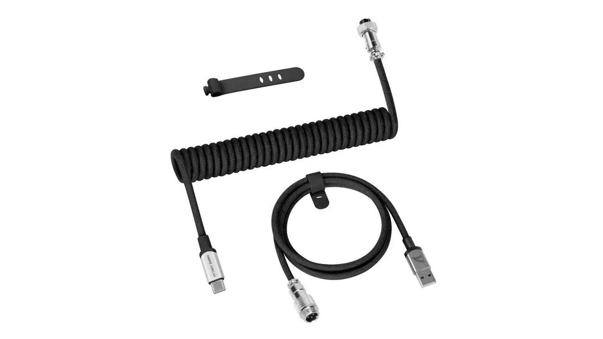
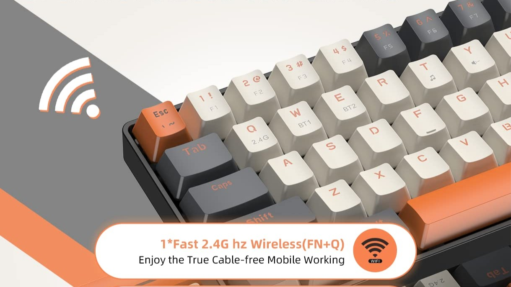
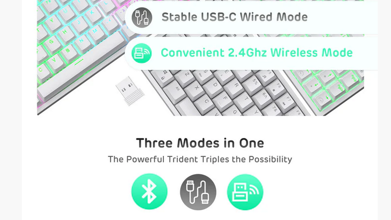

Які бувають клавіатури за підключенням?
-
Провідні клавіатури
Ці клавіатури підключаються до пристрою за допомогою кабелю через USB, PS/2 або інші роз'єми.
Провідні клавіатури мають швидкий відгук та відсутність необхідності заряджання але вони обмеженні у свободі рухів та мають меншу портативність.
- 
-
Bluetooth-клавіатури
Ці клавіатури підключаються до пристроїв через Bluetooth.
Із плюсов Bluetooth-клавіатури портативність і відсутність кабелів та Сумісність із більшістю сучасних пристроїв але у них може бути затримка у відгуку та вони потребують періодичного заряджання або заміни батарей.
-
Радіочастотні клавіатури (RF)
Ці клавіатури використовують USB-приймач (донгл) для підключення. Працюють на частоті 2,4 ГГц.
Із плюсов радіочастотних клавіатур більш стабільний зв'язок, ніж Bluetooth та низька затримка, підходить для геймінгу. Із мінусів потребують USB-приймача, що займає порт та можливі проблеми з інтерференцією сигналу.
- 
-
Комбіновані клавіатури
Ці клавіатури Можуть працювати як у провідному, так і в бездротовому режимі.
Із плюсов комбіновані клавіатур гнучкість у використанні та якщо розрядився акумулятор, можна підключити кабель. Із тільки мінусів вища ціна через універсальність.
- 
-
Wi-Fi клавіатури
Ці клавіатури використовують Wi-Fi для передачі даних. Рідко зустрічаються через складність реалізації.
Із плюсов Wi-Fi клавіатур швидкість і стабільність передачі даних та можуть працювати на великій відстані. Із мінусів вони потребують Wi-Fi-мережі та зазвичай дорожчі.